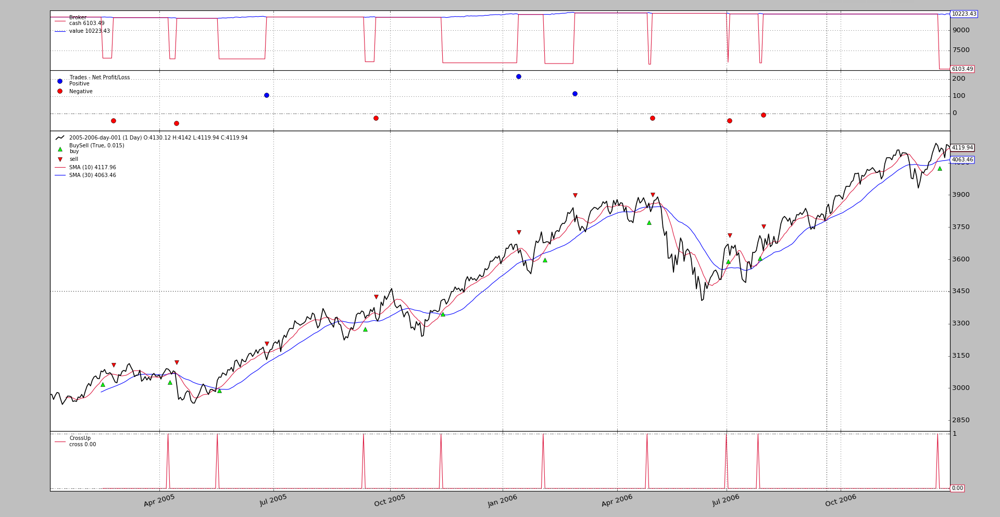
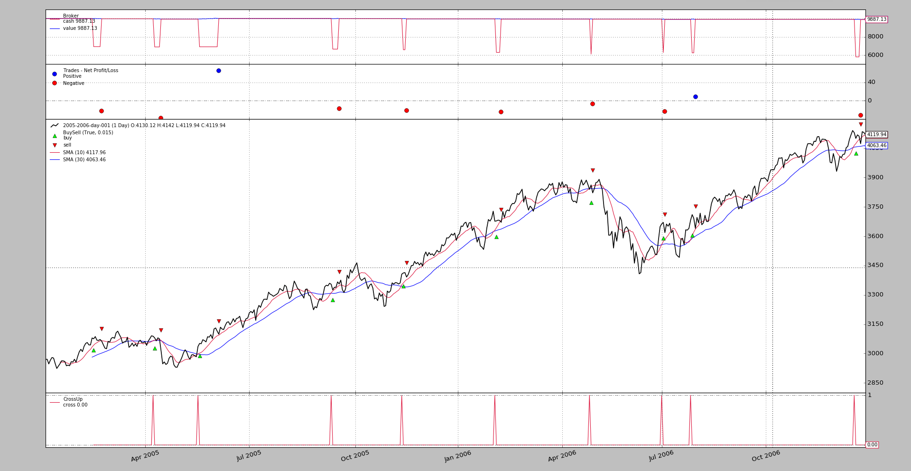
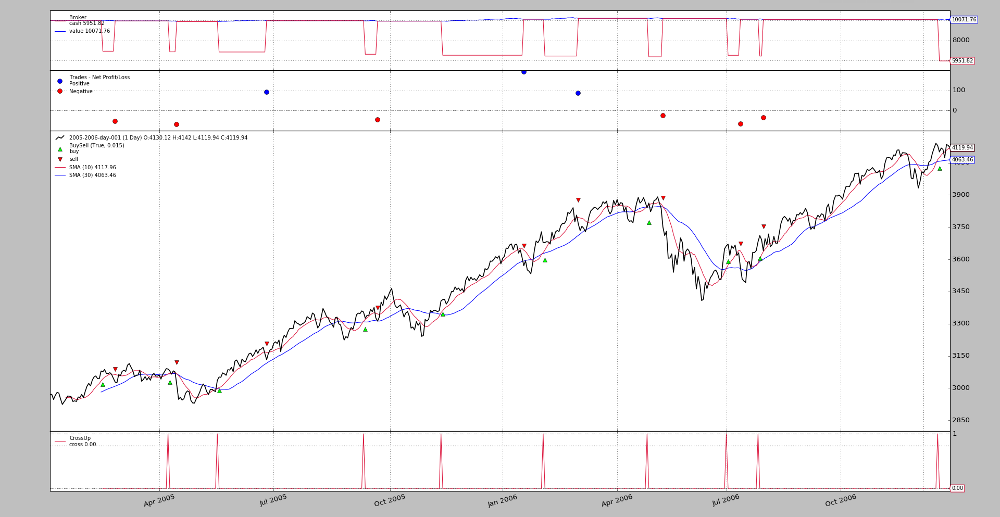

Release 1.9.35.116 adds the StopTrail and StopTrailLimit order
execution types to the backtesting arsenal.
Note
This is only implemented in backtesting and there isn’t yet an implementation for live brokers
Note
Updated with release 1.9.36.116. Interactive Brokers support for
StopTrail, StopTrailLimit and OCO.
OCOSpecify always the 1st order in a group as parameterocoStopTrailLimit: the broker simulation and theIBbroker have the asme behavior. Specify:priceas the initial stop trigger price (specify alsotrailamount) and thenplimias the initial limit price. The difference between the two will determine thelimitoffset(the distance at which the limit price remains from the stop trigger price)
The usage pattern is fully integrated into the standard buy, sell and
close market operation methods of the strategy instances. To notice:
- Indicate which execution type is wished as in
exectype=bt.Order.StopTrail- And whether the trailing price must be calculated with a fixed distance or with a percentage based distance
- Fixed distance:
trailamount=10- Percentage based distance:
trailpercent=0.02(i.e.:2%)
If one has entered the market long by issuing a buy, this is what a
sell with StopTrail and trailamount does:
- If no
priceis specified, the latestcloseprice is usedtrailamountis substracted from the price to find thestop(or trigger) price- The next iteration of the broker checks if the trigger price has been reached
- If Yes: the order is executed with a
Marketexecution type approach- If No, the
stopprice is recalculated by using the latestcloseprice and substracting thetrailamountdistance
- If the new price goes up, it is updated
- If the new price would go down (or not change at all), it is discarded
That is: the trailing stop price follows the price upwards, but remains fixed if the prices start falling, to potentially secure a profit.
If one had entered the market with a sell, then issuing a buy order
with StopTrail simply does the opposite, i.e.: prices are followed
downwards.
Some usage patterns
# For a StopTrail going downwards
# last price will be used as reference
self.buy(size=1, exectype=bt.Order.StopTrail, trailamount=0.25)
# or
self.buy(size=1, exectype=bt.Order.StopTrail, price=10.50, trailamount=0.25)
# For a StopTrail going upwards
# last price will be used as reference
self.sell(size=1, exectype=bt.Order.StopTrail, trailamount=0.25)
# or
self.sell(size=1, exectype=bt.Order.StopTrail, price=10.50, trailamount=0.25)
One can also specify trailpercent instead of trailamount and the
distance to the price will be calculated as a percentage of the price
# For a StopTrail going downwards with 2% distance
# last price will be used as reference
self.buy(size=1, exectype=bt.Order.StopTrail, trailpercent=0.02)
# or
self.buy(size=1, exectype=bt.Order.StopTrail, price=10.50, trailpercent=0.0.02)
# For a StopTrail going upwards with 2% difference
# last price will be used as reference
self.sell(size=1, exectype=bt.Order.StopTrail, trailpercent=0.02)
# or
self.sell(size=1, exectype=bt.Order.StopTrail, price=10.50, trailpercent=0.02)
For a StopTrailLimit
The only difference is what happens when the trailing stop price is triggered.
In this case the order is executed as a
Limitorder (the same behavior aStopLimitorder has, but in this case with a dynamic triggering price)Note
one has to specify
plimit=x.xtobuyorsell, which will be the limit priceNote
the limit price is not changed dynamically like the stop/trigger price
An example is always worth a thousand words and hence the usual backtrader sample, which
- Uses a moving average crossing up to enter the market long
- Uses a trailing stop to exit the market
The execution with 50 points of fixed price distance
$ ./trail.py --plot --strat trailamount=50.0
Which produces the following chart
And the following output:
**************************************************
2005-02-14,3075.76,3025.76,3025.76
----------
2005-02-15,3086.95,3036.95,3036.95
2005-02-16,3068.55,3036.95,3018.55
2005-02-17,3067.34,3036.95,3017.34
2005-02-18,3072.04,3036.95,3022.04
2005-02-21,3063.64,3036.95,3013.64
...
...
**************************************************
2005-05-19,3051.79,3001.79,3001.79
----------
2005-05-20,3050.45,3001.79,3000.45
2005-05-23,3070.98,3020.98,3020.98
2005-05-24,3066.55,3020.98,3016.55
2005-05-25,3059.84,3020.98,3009.84
2005-05-26,3086.08,3036.08,3036.08
2005-05-27,3084.0,3036.08,3034.0
2005-05-30,3096.54,3046.54,3046.54
2005-05-31,3076.75,3046.54,3026.75
2005-06-01,3125.88,3075.88,3075.88
2005-06-02,3131.03,3081.03,3081.03
2005-06-03,3114.27,3081.03,3064.27
2005-06-06,3099.2,3081.03,3049.2
2005-06-07,3134.82,3084.82,3084.82
2005-06-08,3125.59,3084.82,3075.59
2005-06-09,3122.93,3084.82,3072.93
2005-06-10,3143.85,3093.85,3093.85
2005-06-13,3159.83,3109.83,3109.83
2005-06-14,3162.86,3112.86,3112.86
2005-06-15,3147.55,3112.86,3097.55
2005-06-16,3160.09,3112.86,3110.09
2005-06-17,3178.48,3128.48,3128.48
2005-06-20,3162.14,3128.48,3112.14
2005-06-21,3179.62,3129.62,3129.62
2005-06-22,3182.08,3132.08,3132.08
2005-06-23,3190.8,3140.8,3140.8
2005-06-24,3161.0,3140.8,3111.0
...
...
...
**************************************************
2006-12-19,4100.48,4050.48,4050.48
----------
2006-12-20,4118.54,4068.54,4068.54
2006-12-21,4112.1,4068.54,4062.1
2006-12-22,4073.5,4068.54,4023.5
2006-12-27,4134.86,4084.86,4084.86
2006-12-28,4130.66,4084.86,4080.66
2006-12-29,4119.94,4084.86,4069.94
Rather than waiting for the usual cross down pattern the system uses the trailing stop to exit the market. Let’s see the 1st operation for example
- Closing price when entering long:
3075.76- System calculated trail stop price:
3025.76(which is50units away)- Sample calculated trail stop price:
3025.76(last price shown in each line)
After this first calculation:
- The closing price goes up to
3086.95and the stop price is adjusted to3036.95- The following closing prices don’t exceed
3086.95and the trigger price doesn’t change
The same pattern can be seen in the other 2 operations.
For the sake of comparison, an execution with just 30 points of fixed
distance (just the chart)
$ ./trail.py --plot --strat trailamount=30.0
And the chart
Followed by one last execution with trailpercent=0.02
$ ./trail.py --plot --strat trailpercent=0.02
The corresponding chart.
The sample usage
$ ./trail.py --help
usage: trail.py [-h] [--data0 DATA0] [--fromdate FROMDATE] [--todate TODATE]
[--cerebro kwargs] [--broker kwargs] [--sizer kwargs]
[--strat kwargs] [--plot [kwargs]]
StopTrail Sample
optional arguments:
-h, --help show this help message and exit
--data0 DATA0 Data to read in (default:
../../datas/2005-2006-day-001.txt)
--fromdate FROMDATE Date[time] in YYYY-MM-DD[THH:MM:SS] format (default: )
--todate TODATE Date[time] in YYYY-MM-DD[THH:MM:SS] format (default: )
--cerebro kwargs kwargs in key=value format (default: )
--broker kwargs kwargs in key=value format (default: )
--sizer kwargs kwargs in key=value format (default: )
--strat kwargs kwargs in key=value format (default: )
--plot [kwargs] kwargs in key=value format (default: )
The sample code
from __future__ import (absolute_import, division, print_function,
unicode_literals)
import argparse
import datetime
import backtrader as bt
class St(bt.Strategy):
params = dict(
ma=bt.ind.SMA,
p1=10,
p2=30,
stoptype=bt.Order.StopTrail,
trailamount=0.0,
trailpercent=0.0,
)
def __init__(self):
ma1, ma2 = self.p.ma(period=self.p.p1), self.p.ma(period=self.p.p2)
self.crup = bt.ind.CrossUp(ma1, ma2)
self.order = None
def next(self):
if not self.position:
if self.crup:
o = self.buy()
self.order = None
print('*' * 50)
elif self.order is None:
self.order = self.sell(exectype=self.p.stoptype,
trailamount=self.p.trailamount,
trailpercent=self.p.trailpercent)
if self.p.trailamount:
tcheck = self.data.close - self.p.trailamount
else:
tcheck = self.data.close * (1.0 - self.p.trailpercent)
print(','.join(
map(str, [self.datetime.date(), self.data.close[0],
self.order.created.price, tcheck])
)
)
print('-' * 10)
else:
if self.p.trailamount:
tcheck = self.data.close - self.p.trailamount
else:
tcheck = self.data.close * (1.0 - self.p.trailpercent)
print(','.join(
map(str, [self.datetime.date(), self.data.close[0],
self.order.created.price, tcheck])
)
)
def runstrat(args=None):
args = parse_args(args)
cerebro = bt.Cerebro()
# Data feed kwargs
kwargs = dict()
# Parse from/to-date
dtfmt, tmfmt = '%Y-%m-%d', 'T%H:%M:%S'
for a, d in ((getattr(args, x), x) for x in ['fromdate', 'todate']):
if a:
strpfmt = dtfmt + tmfmt * ('T' in a)
kwargs[d] = datetime.datetime.strptime(a, strpfmt)
# Data feed
data0 = bt.feeds.BacktraderCSVData(dataname=args.data0, **kwargs)
cerebro.adddata(data0)
# Broker
cerebro.broker = bt.brokers.BackBroker(**eval('dict(' + args.broker + ')'))
# Sizer
cerebro.addsizer(bt.sizers.FixedSize, **eval('dict(' + args.sizer + ')'))
# Strategy
cerebro.addstrategy(St, **eval('dict(' + args.strat + ')'))
# Execute
cerebro.run(**eval('dict(' + args.cerebro + ')'))
if args.plot: # Plot if requested to
cerebro.plot(**eval('dict(' + args.plot + ')'))
def parse_args(pargs=None):
parser = argparse.ArgumentParser(
formatter_class=argparse.ArgumentDefaultsHelpFormatter,
description=(
'StopTrail Sample'
)
)
parser.add_argument('--data0', default='../../datas/2005-2006-day-001.txt',
required=False, help='Data to read in')
# Defaults for dates
parser.add_argument('--fromdate', required=False, default='',
help='Date[time] in YYYY-MM-DD[THH:MM:SS] format')
parser.add_argument('--todate', required=False, default='',
help='Date[time] in YYYY-MM-DD[THH:MM:SS] format')
parser.add_argument('--cerebro', required=False, default='',
metavar='kwargs', help='kwargs in key=value format')
parser.add_argument('--broker', required=False, default='',
metavar='kwargs', help='kwargs in key=value format')
parser.add_argument('--sizer', required=False, default='',
metavar='kwargs', help='kwargs in key=value format')
parser.add_argument('--strat', required=False, default='',
metavar='kwargs', help='kwargs in key=value format')
parser.add_argument('--plot', required=False, default='',
nargs='?', const='{}',
metavar='kwargs', help='kwargs in key=value format')
return parser.parse_args(pargs)
if __name__ == '__main__':
runstrat()
{kind=link}
{kind=link}
{kind=link}